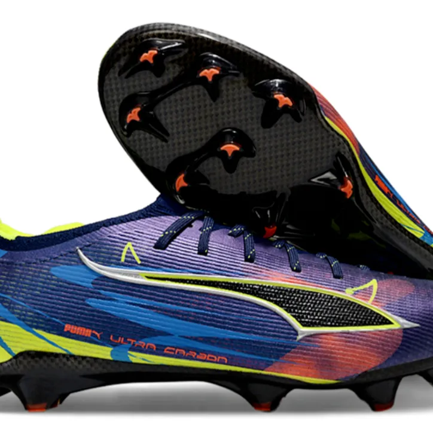
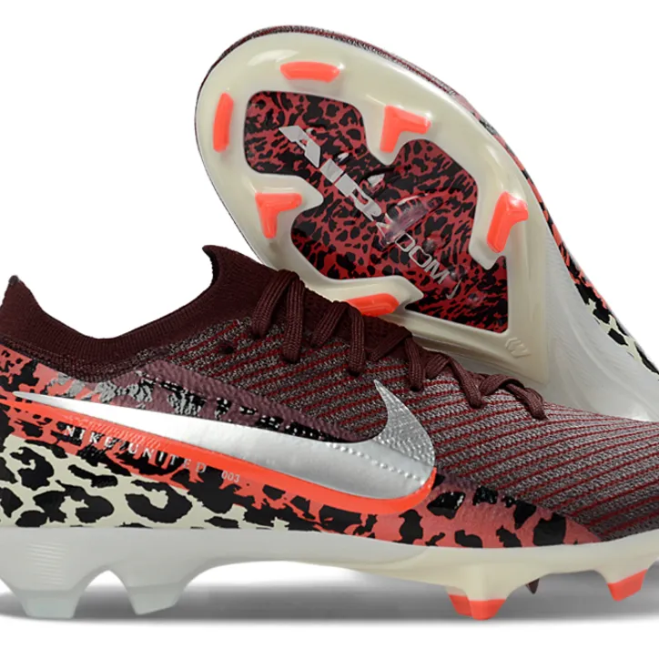
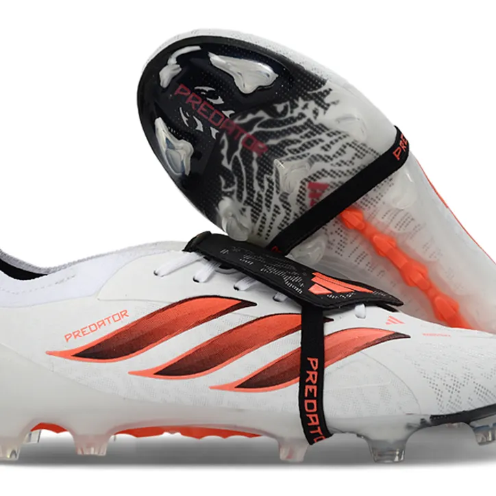
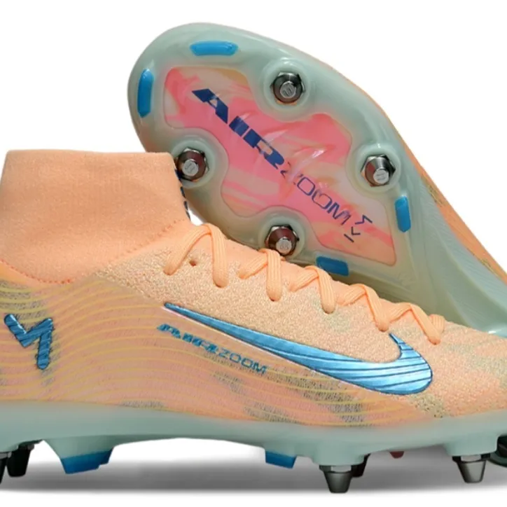
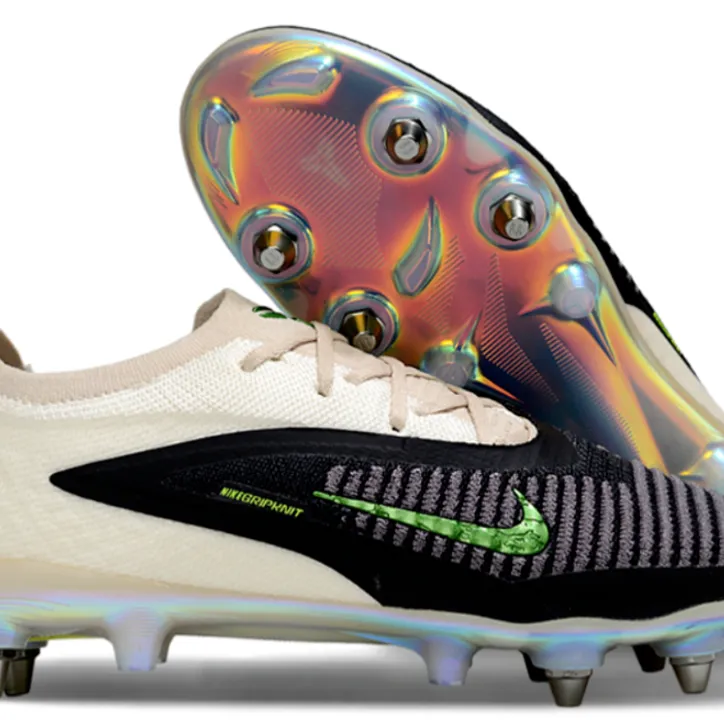
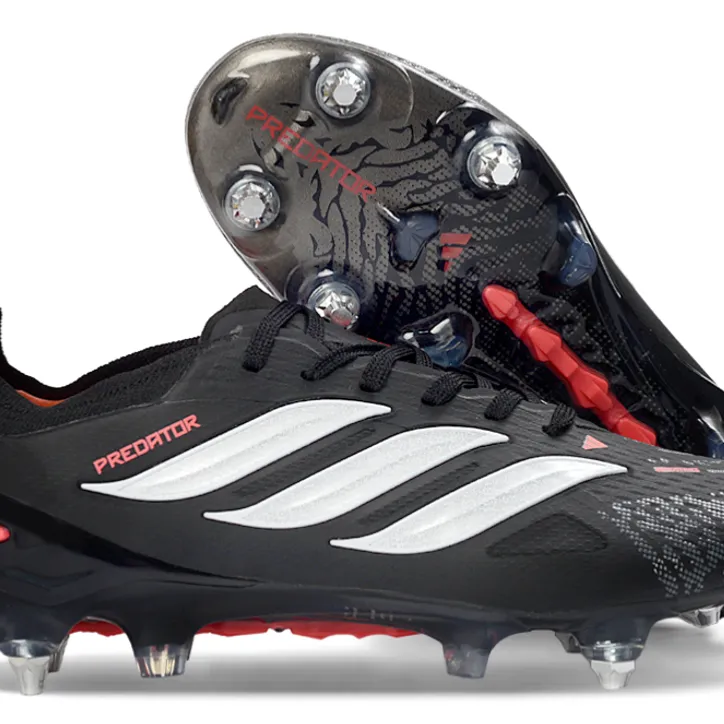
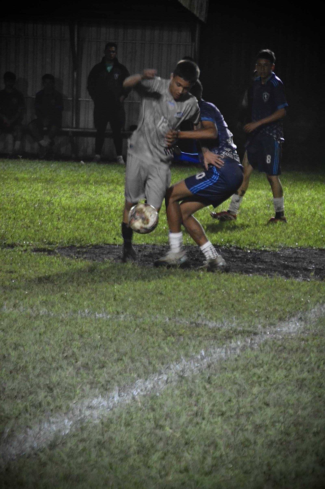
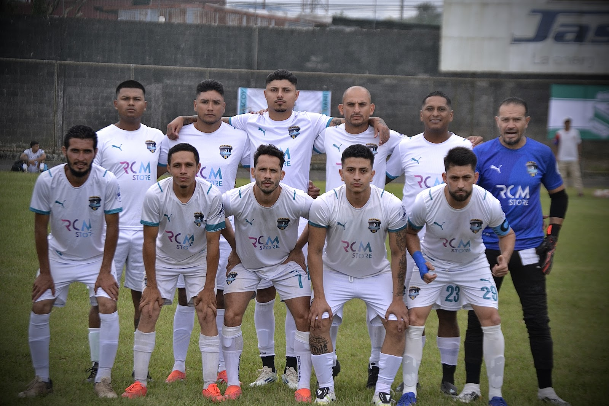
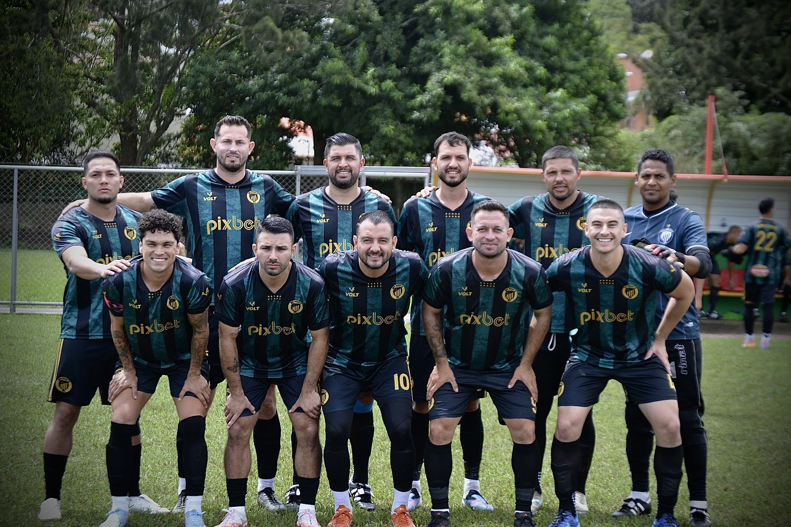

DREAM TEAM / FÚTBOL EN CADA DETALLE
VIVE EL
JUEGO.
Tacos para salir a la cancha. Fotografía para guardar cada momento que merece repetirse.
01 / 02PARA QUIENES SIENTEN EL FÚTBOLDESLIZA PARA DESCUBRIR ↓
01 / EQUÍPATE
ENCUENTRA
TU PAR.
Dos tipos de suela para jugar a tu manera. Modelos de referencia disponibles solo por pedido; consulta tallas y disponibilidad por WhatsApp.
01
FG / NATURAL FIRME
Tacos convencionales para cancha de césped natural firme.


02
SG / TORNILLO
Tacos de tornillo para cancha natural húmeda.



Imágenes de modelos de referencia: ChemasFut FG y ChemasFut SG. Precio y disponibilidad sujetos a consulta.
02 / CAPTURA EL MOMENTO
EL PARTIDO PASA.
LA EMOCIÓN QUEDA.
Sesiones de fotografía deportiva para transformar cada instante de juego en un recuerdo que sigue vivo.
Hablemos de tu sesión


EL SIGUIENTE PASO
HAGAMOS QUE
SUCEDA.
¿Buscas tacos o quieres una sesión deportiva? Cuéntanos qué tienes en mente.
Escríbenos por WhatsApp